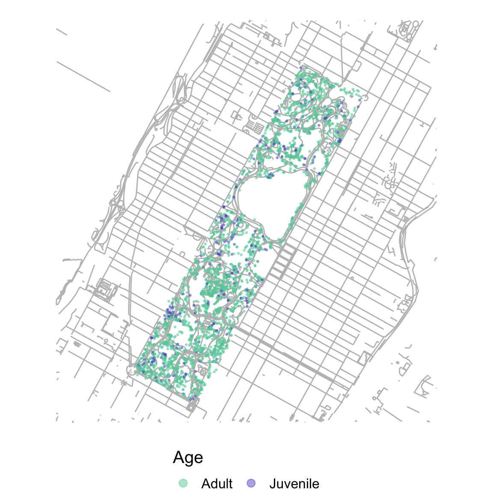
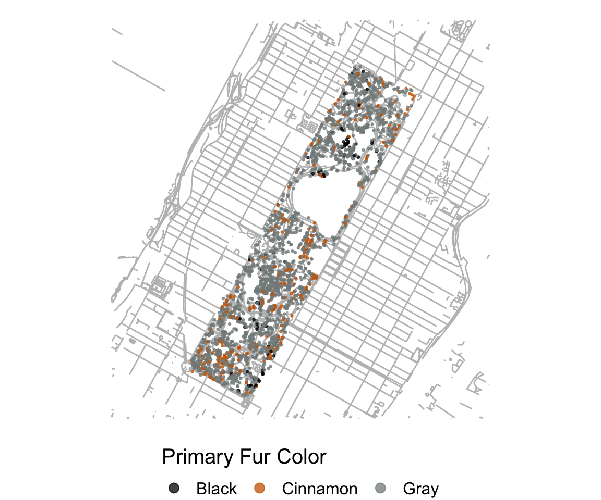

Squirreling the Stats: A Demographic Tale
library(tidyverse)
library(plotly)
library(sf)
library(knitr)Who are the Central Park squirrels? Here we report who they are and what they look like.
# First, we will import the cleaned squirrel data and a shapefile of Central Park.
squirrel_census =
read_csv("data/clean_squirrel_2018.csv")
central_park_map = st_read(here::here('central_park', 'CentralPark.shp'), quiet = TRUE)In the 2018 census, there are 2824 unique squirrel sightings documented. As volunteer researchers observed the squirrels, they provided each squirrel with a unique identifier and documented the age and fur colors of each critter.
How mature?
Let’s first explore squirrel ages.
squirrel_census |>
filter(age != "?") |>
ggplot() +
geom_sf(data = central_park_map, color = "grey") +
geom_point(
aes(x = x, y = y, color = age),
size = 0.5, alpha = 0.5) +
theme_void(base_size = 15) +
theme(legend.position = 'bottom') +
guides(color = guide_legend(
title.position = "top",
override.aes = list(size = 3))) +
scale_color_manual(values = c("Adult" = "aquamarine3", "Juvenile" = "slateblue3")) +
labs(color = "Age")
squirrel_census |>
filter(age != "?") |>
group_by(age) |>
count(age) |>
mutate(Age = fct_reorder(age, n)) |>
plot_ly (x = ~age, y = ~n, color = ~age,
type = "bar") |>
layout(
xaxis = list(title = "Age"),
yaxis = list(title = "Number of Squirrels")
)
## Warning in RColorBrewer::brewer.pal(N, "Set2"): minimal value for n is 3, returning requested palette with 3 different levels
## Warning in RColorBrewer::brewer.pal(N, "Set2"): minimal value for n is 3, returning requested palette with 3 different levelsThe majority of observed squirrels are adults. There are
2503 adult squirrels in the data set and only 319
juvenile squirrels.
We can also see that juvenile squirrels can be
frequently observed in some areas of the Central Park, such as Central
Park West between 72nd St. and 66th St.

What color?
Let’s also look at primary and highlight fur color.
Some squirrels model only one fur color, but some extra fashionable
squirrels will don mixed patterns of multiple fur colors. The
primary fur color is the main color of the squirrel and the
secondary colors accent the primary color to
give some squirrels unique style.
squirrel_census |>
filter(!(combination_of_primary_and_highlight_color %in% c("N/A", "?"))) |>
group_by(primary_fur_color) |>
count(primary_fur_color) |>
mutate(primary_fur_color = fct_reorder(primary_fur_color, n)) |>
plot_ly (x = ~primary_fur_color, y = ~n, color = ~primary_fur_color,
type = "bar", colors = "viridis") |>
layout(
xaxis = list(title = "Primary Fur Color"),
yaxis = list(title = "Number of Squirrels"),
legend = list(x = 0, y = 1, orientation = "h")
)We can see that most squirrels in Central Park have gray
fur with some cinnamon or white accents
(above). Squirrels that are black with or without any
accent colors are very rare! Consider yourself lucky if you’ve ever seen
one of them frolicking in the park!
If you’d like to try your luck and observe a black
squirrel in “the wild”, we’d recommend hanging around some specific
spots that the black squirrels seem to cluster in, like the
South-East corner of the park or the North Woods above 96th St, as shown
on the map (right).

squirrel_census |>
rename(combination_fur_color = combination_of_primary_and_highlight_color) |>
count(combination_fur_color) |>
mutate(combination_fur_color = fct_reorder(combination_fur_color, n)) |>
plot_ly (x = ~combination_fur_color, y = ~n, color = ~combination_fur_color,
type = "bar", colors = "viridis") |>
layout(
xaxis = list(title = "All Fur Colors",showticklabels = FALSE),
yaxis = list(title = "Number of Squirrels")
)ggplot() +
geom_sf(data = central_park_map, color = "grey") +
geom_point(
data = squirrel_census,
aes(x = x, y = y, color = primary_fur_color),
size = 0.5, alpha = 0.75) +
theme_void(base_size = 15) +
theme(legend.position = 'bottom') +
guides(color = guide_legend(
title.position = "top",
override.aes = list(size = 3))) +
labs(color = 'Primary Fur Color') +
scale_color_manual(values = c("Black" = "black", "Gray" = "azure4", "Cinnamon" = "darkorange3")) 